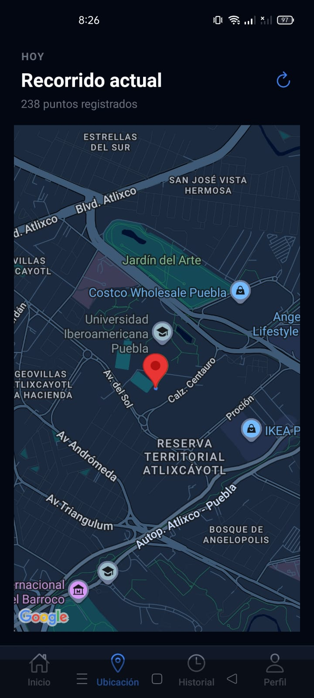
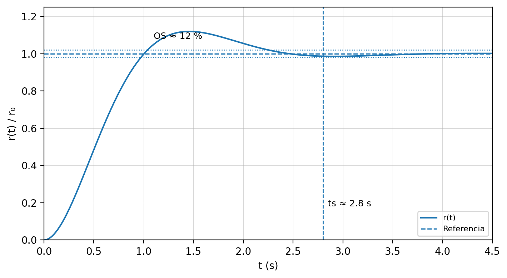
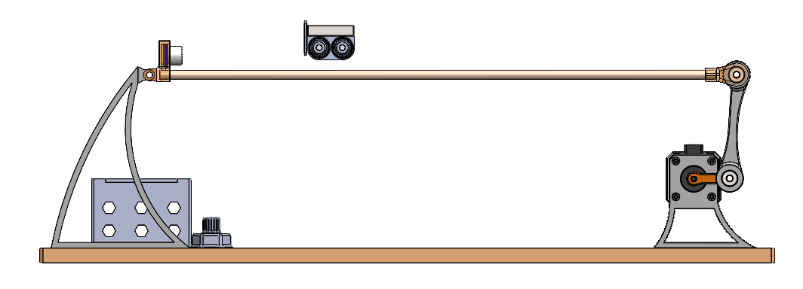
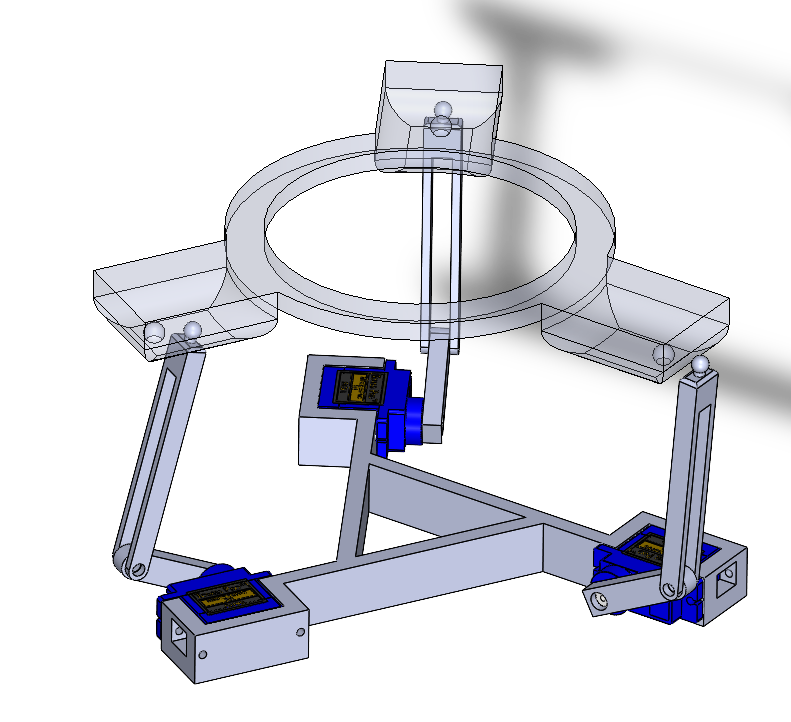
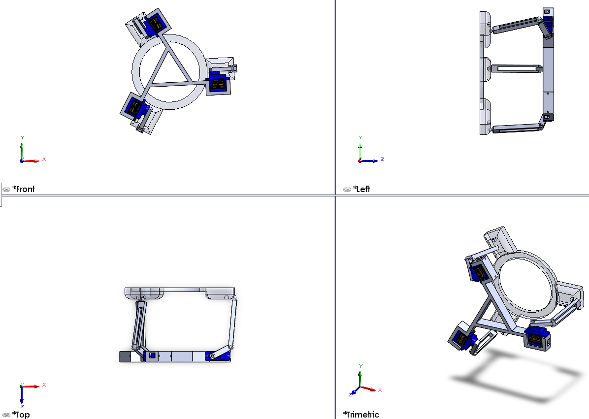
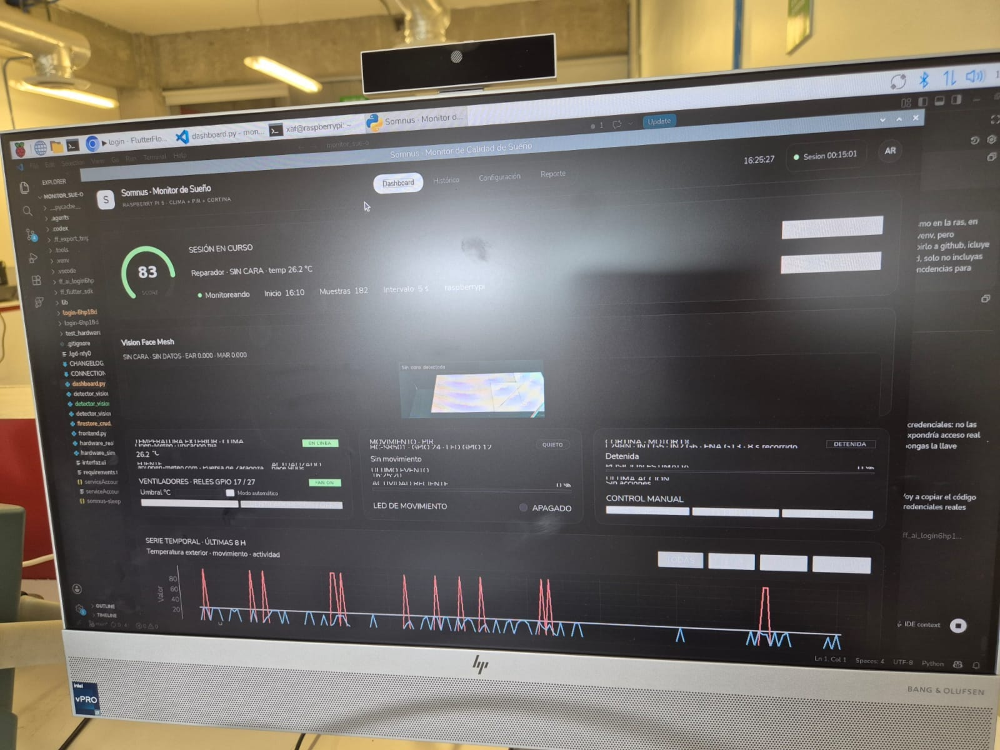
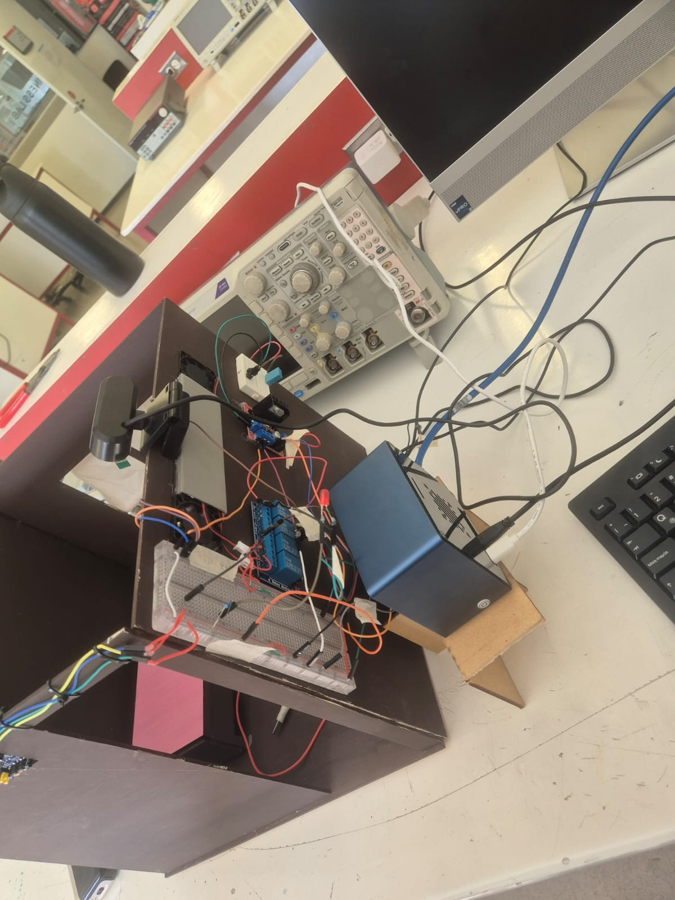
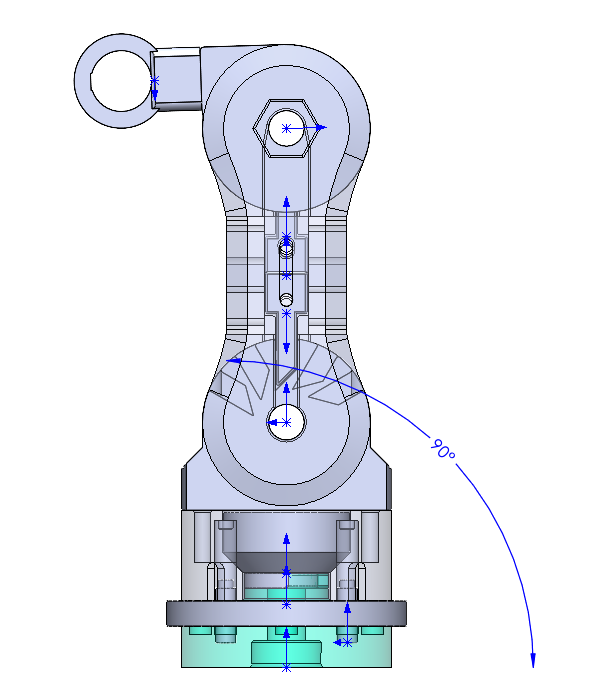
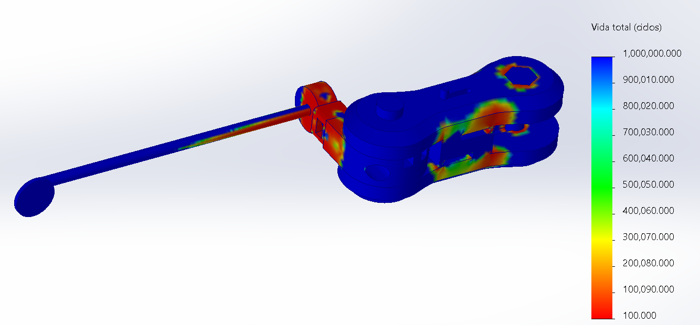

Disponible para practicas y proyectos tecnicos
Soy
Arith Maldonado,
mecatronica,
biomedica y prototipos.
Estudiante de Ingenieria Mecatronica e Ingeniero Biomedico con mencion honorifica. Construyo sistemas donde conviven software, hardware, CAD, automatizacion, vision por computadora y datos reales.
// Sobre mi
Ingenieria aplicada
con mentalidad de prototipo
Mi perfil mezcla automatizacion, diseno mecanico, electronica embebida, analisis de datos y experiencia tecnica con equipo medico. Busco construir soluciones funcionales, medibles y bien documentadas.
Perfil profesional
Actualmente estudio Ingenieria Mecatronica en la Universidad Iberoamericana Puebla, con graduacion esperada en diciembre de 2026. Tambien soy Ingeniero Biomedico graduado con mencion honorifica. Me interesan roles de automatizacion, manufactura, prototipado y sistemas embebidos, especialmente donde el trabajo tenga impacto real.
Base tecnica
- Experiencia profesional Servicio, instalacion, diagnostico y documentacion tecnica de ultrasonidos, rayos X, paneles planos y triggers en Punto Focal Equipo Medico.
- Proyectos seleccionados Plataforma 3-DOF Ball-Balancing con ESP32, servos, OpenCV, PID y Bluetooth; XGIO Smart Cane GPS Tracking Ecosystem.
- Certificaciones y herramientas CSWA, SolidWorks Simulation Associate, SolidWorks Additive Manufacturing Associate, Google Project Management, EF SET B2, Python, MATLAB, Arduino, ESP32, Firebase, Altium, Power BI y manufactura digital.
// Certificaciones
Credenciales tecnicas
y logros academicos
Certificaciones y reconocimientos que respaldan mi base en CAD, simulacion, manufactura aditiva, gestion de proyectos y desempeno academico.
// Catalogo de proyectos
Proyectos construidos
con evidencia real
Esta seccion crecera como un catalogo profesional: cada tarjeta resume un proyecto con una imagen, una descripcion corta y acceso a su ficha completa con detalles, stack, repositorio, documentos e imagenes.
IoT · Full-stack · CAD
->
XGIO Smart Cane GPS Tracking Ecosystem
App movil, dashboard web, backend GPS, firmware ESP32, documentacion y prototipo mecanico para un baston inteligente.
React Native
ESP32
Firebase
SolidWorks
Control discreto · PID · Prototipo
->
Ball & Beam Discrete Control Prototype
Plataforma inestable para validar PID discreto, filtros digitales y actuacion con NEMA 17, driver DRV8825 y sensor de posicion.
Arduino
PID
ZOH
Expo Ibero
Vision · ESP32 · PID/PD
->
3DOF Ball Balancing Platform
Plataforma con tres brazos que centra una pelota usando OpenCV, Bluetooth, ESP32 y control realimentado.
OpenCV
ESP32
Bluetooth
SolidWorks
IoT · Raspberry Pi · Firebase
->
Somnus Sleep Monitor
Habitacion inteligente con Raspberry Pi 5, sensores, actuadores, vision por camara, dashboard local y app FlutterFlow.
Python
PyQt5
GPIO
Firestore
Biomecanica / FEA / ISPO 2025
->
Transradial Prosthesis Tool Holder
Rediseno y validacion de un sistema de sujecion de herramientas odontologicas para una protesis transradial.
SolidWorks
Simulation
PETG
ISPO
// Proyecto 01
XGIO: Sistema de Rastreo GPS
para Baston Inteligente
Primer proyecto publicado en este portafolio. XGIO muestra mi forma de trabajar: integrar app movil, dashboard web, backend geoespacial, firmware, CAD, prototipo fisico y documentacion tecnica en un solo ecosistema funcional.
Que resolvi
El reto fue convertir un baston inteligente en un sistema completo de seguimiento: registrar ubicacion, limpiar ruido del GPS, mostrar rutas en tiempo real, alertar eventos criticos y dejar evidencia tecnica suficiente para que el proyecto pudiera revisarse, instalarse y evolucionar.
Resultado integrado
- App: rol de cuidador, mapas, historial y alertas.
- Nube: Firestore, APIs Python y funciones serverless.
- Hardware: ESP32/T-Beam, GPS, MPU6050, S.O.S y CAD.
7modulos
2.5m/s filtro
IoTsistema
Full-stack + IoT + CAD
Monorepo completo: app, nube, firmware, analitica GPS y diseno mecanico.
XGIO integra un baston inteligente con GPS, deteccion de caidas, boton S.O.S, app para cuidadores, panel administrativo y procesamiento de rutas. El repositorio documenta codigo, pruebas, renders CAD, prototipos impresos, reportes tecnicos y despliegue.



Aplicacion movil para cuidadores
React Native y Expo con roles, mapas, historial de rutas, estado del baston, Bluetooth y alertas criticas por S.O.S o caida.
React Native
Expo
Firebase
Backend geoespacial
Funciones Python para limpieza de polilineas, comparacion de rutas, dispersion GPS, exportacion de datos y visualizaciones con Matplotlib/Folium.
Python
Vercel
Pandas
Firmware y prototipo fisico
ESP32/T-Beam con GPS, MPU6050, boton S.O.S, buzzer, vibracion y carcasa modelada en SolidWorks para integrar electronica y antena.
C++
Arduino
SolidWorks
// Evidencia visual
Pantallas, prototipos
y pruebas del sistema
La documentacion de XGIO incluye capturas de la app, panel administrativo, diseno mecanico, fotos de impresion 3D y graficas de desempeno GPS generadas desde datos del proyecto.
// Repositorio
Estructura del monorepo
en GitHub
El proyecto esta organizado para separar aplicacion, dashboard, API, firmware, documentacion, assets CAD, graficas y herramientas de soporte.
app/
React Native + Expo
admin/
React + Vite
backend/api/
clean_polylines.py
compare_polylines.py
interactive_map.py
firmware/XGIO_SmartCane/
XGIO_SmartCane.ino
docs/
app.md, dashboard.md, backend.md, firmware.md
assets/cad/
assets/imagenes/
graficas_reporte/
dispersion_5min.png
polylines_clean_2.5ms.png
tools/
generate_qr.py
mkdocs.yml
README.md
// Stack tecnico
Herramientas y
tecnologias usadas
XGIO combina desarrollo movil, web, nube, analisis de datos, electronica embebida y diseno mecanico.
RN
React Native / Expo
Aplicacion movil con pantallas por rol, mapas, historial, Bluetooth y estados del baston.
RV
React + Vite
Dashboard administrativo en modo oscuro con metricas, tablas, mapas y configuracion.
FB
Firebase / Firestore
Sincronizacion de usuarios, ubicaciones, alertas, baterias y estados del dispositivo.
PY
Python geoespacial
Limpieza de coordenadas, calculo de dispersion, comparacion de rutas y graficas.
C++
ESP32 / Arduino
Lectura GPS, acelerometro, boton S.O.S, comunicacion y publicacion de telemetria.
CAD
SolidWorks + STL
Carcasa, ensamble, archivos editables y modelos para impresion 3D del prototipo.
// Documentos y entregables
Material listo para
revision profesional
Ademas del codigo, el proyecto tiene sitio de documentacion, poster, resumen, reporte de ingenieria, guia de despliegue, capturas y archivos CAD.
// Proyecto 02
Ball & Beam: Control Discreto
para sistema inestable
Prototipo mecatronico presentado en Expo Ibero Primavera 2026. El proyecto se centro en modelar, discretizar e implementar un controlador PID digital para estabilizar la posicion de una esfera sobre una barra actuada por motor paso a paso.
Enfoque de control
El Ball and Beam es un sistema subactuado e inestable en lazo abierto: cualquier perturbacion desplaza la bola si no existe accion de control. El trabajo conecto el modelo Euler-Lagrange, la discretizacion por ZOH y varias implementaciones PID en Arduino para comparar ruido, retardo, derivada e integral numerica.
Resultado de simulacion
- Modelo: funcion de transferencia discreta con retenedor ZOH.
- Control: PID discreto con ajuste inicial Ziegler-Nichols y refinamiento por ISE.
- Prototipo: NEMA 17, DRV8825, sensor de posicion y piezas CAD/impresion 3D.
Control discreto · PID · Expo Ibero
Banco de pruebas para estudiar estabilizacion, ruido de sensor y accion derivativa.
El sistema usa una barra articulada, una esfera como masa movil, sensor de posicion y actuacion con motor paso a paso. Se desarrollaron variantes del controlador para evaluar filtros EMA, filtro pasa-altas en la derivada, compensacion proporcional modificada e integracion trapezoidal.


// Control discreto
PID digital, filtros
y aproximaciones numericas
El proyecto no se quedo en "mover un motor": se compararon variantes del algoritmo discreto para atacar problemas reales del prototipo, como ruido de medicion, kick derivativo, saturacion y acumulacion integral.
Metodo 2: EMA
y_f[k] = alpha*y[k] + (1-alpha)*y_f[k-1]
Filtra la lectura de posicion antes de calcular el error para reducir ruido del sensor sin introducir un retardo excesivo.
Metodo 3: HPF
U[k] = Kp*e[k] + Ki*W[k] - Kd*Z[k]
Reemplaza la derivada directa por un filtro pasa-altas sobre posicion, evitando amplificar ruido por diferencias finitas.
Metodo 4: PID modificado
U[k] = Kp*e[k] + Ki*W[k] - Kd*Z[k] - Kp*y[k]
Agrega accion proporcional sobre posicion para reducir el golpe de control cuando cambia el setpoint.
Metodo 5: Trapezoidal
W[k] = W[k-1] + (T/2)*(e[k]+e[k-1])
Integra el error con regla trapezoidal, una aproximacion mas precisa que Euler para el acumulador integral.
float e = setpoint - y;
W = W + (T / 2.0f) * (e + e_prev);
W = constrain(W, -500.0f, 500.0f);
float U = Kp * e + Ki * W + Kd * (e - e_prev) / T;
U = constrain(U, -ANGULO_MAX, ANGULO_MAX);
moverHacia((long)(U * STEPS_PER_DEG));
// Evidencia visual
CAD, simulacion
y control discreto
La ficha combina las vistas finales del prototipo y los resultados del resumen tecnico para mostrar tanto el diseno fisico como la base matematica del controlador.
// Stack tecnico
Hardware, software
y entregables
El proyecto une modelado matematico, simulacion, diseno CAD, manufactura de bajo costo e implementacion embebida del controlador.
PID
Control discreto
PID digital, ZOH, asignacion de polos, Ziegler-Nichols e indice ISE para ajuste de respuesta.
UNO
Arduino + DRV8825
Lectura de posicion, calculo del control cada 50 ms y actuacion por pulsos STEP/DIR.
N17
NEMA 17
Motor paso a paso con microstepping 1/8 y limite mecanico/controlado de +/-15 grados.
SEN
Sensor de posicion
Medicion de la posicion de la esfera y filtrado digital para reducir ruido en la realimentacion.
MAT
MATLAB / Simulink
Modelo linealizado, respuesta al escalon, sensibilidad y validacion previa a la implementacion.
CAD
SolidWorks
Diseno de soportes, ensamble, montaje y comunicacion visual del prototipo.
// Proyecto 03
Plataforma 3DOF:
balanceo de pelota con vision
Plataforma robotica de tres grados de libertad accionada por tres brazos. El sistema detecta la pelota con una camara, calcula el error respecto al centro y envia comandos por Bluetooth a un ESP32 para ajustar tres servos en tiempo real.
Que problema resolvio
El reto fue cerrar el ciclo entre vision por computadora, control y actuacion fisica: medir la posicion de una pelota en movimiento, convertir el error visual en angulos de servos y estabilizar la plataforma sin movimientos bruscos ni perdida de referencia.
Arquitectura integrada
- Vision: OpenCV, umbral HSV, contorno dominante y centro calibrado.
- Control: lazo realimentado PID/PD con saturacion, derivada filtrada y ajuste de ejes.
- Hardware: ESP32, Bluetooth serial, PWM y tres servos para plataforma 3DOF.
3servos
66 Hzcmd max
HSVvision
Mecatronica / Vision / ESP32
Un sistema fisico que traduce pixeles en movimiento coordinado de tres brazos.
El proyecto combina CAD en SolidWorks, firmware embebido, comunicacion Bluetooth y procesamiento de imagen. El firmware recibe comandos `ANG:izq,der,vert`, suaviza los cambios con una rampa y regresa al centro si se pierde la pelota o se interrumpe la comunicacion.


// Vision y control
Del centro visual
a los angulos de servo
La computadora detecta la pelota, normaliza el error en X/Y y envia al ESP32 los angulos objetivo. El firmware separa la logica de alto nivel del movimiento fisico: invierte el mapeo de servos, limita rangos, aplica rampa y usa timeout de seguridad.
Deteccion
HSV + erode/dilate + contorno mayor
La pelota se extrae por color y se calcula su centro usando el circulo minimo del contorno dominante.
Error
errx = (x - cx) / (w / 2)
El error se normaliza contra el centro calibrado de la plataforma para convertir pixeles en accion de control.
Comando
ANG:izq,der,vert
Python envia angulos absolutos por Bluetooth serial hacia el ESP32 a una frecuencia limitada.
Seguridad
LOST + timeout 700 ms
Si se pierde la pelota o no llegan comandos, la plataforma vuelve al centro para evitar movimientos no controlados.
uX = KpX * errx_raw + KdX * dxf
cmd = f"ANG:{ang_izq},{ang_der},{ang_vert}\\n"
sock.send(cmd.encode())
parseAngulos(msg, aIzq, aDer, aVert);
writeServoLogical(SERVO_IZQ, posIzq);
if(millis() - tLastCmd > TIMEOUT_MS) tgtIzq = 90;
// Evidencia visual
CAD, control manual
y balanceo autonomo
La evidencia muestra el modelo mecanico y dos pruebas clave: control manual de la plataforma con la mano y balanceo de la pelota con el controlador realimentado.
// Stack y entregables
Codigo embebido,
vision y prototipo fisico
El proyecto funciona como evidencia de integracion mecatronica: diseno mecanico, firmware, comunicacion serial, procesamiento de imagen y validacion experimental sobre hardware real.
CV
OpenCV
Deteccion por HSV, limpieza morfologica, contornos y centro calibrado de la pelota.
PID
Control realimentado
Control tipo PID/PD con ganancias ajustables, derivada filtrada y saturacion de salida.
BT
Bluetooth serial
Protocolo simple de comandos para separar la vision en PC del control fisico en ESP32.
ESP
ESP32
PWM para servos, lectura no bloqueante, timeout de seguridad y rampa de movimiento.
CAD
SolidWorks
Modelado de plataforma, brazos y ensamble para comunicar la solucion mecanica.
QA
Pruebas fisicas
Validacion con control manual, deteccion de pelota y balanceo autonomo sobre el prototipo.
// Proyecto 04
Somnus Sleep Monitor:
habitacion inteligente IoT
Prototipo funcional para monitoreo y control de un ambiente de descanso. Integra Raspberry Pi 5, sensores fisicos, actuadores, vision por camara, dashboard local, Firebase Firestore y una app de usuario construida en FlutterFlow.
Que problema resolvio
Durante el descanso, variables como movimiento, ventilacion, luz, temperatura y cortinas afectan la comodidad del usuario. Somnus centraliza esas senales y permite controlar actuadores fisicos desde una interfaz local y desde una app remota sincronizada en la nube.
Arquitectura integrada
- Fisica: PIR, LED, relevadores, ventiladores, L298N, motor DC y camara USB.
- Control local: Python, PyQt5, gpiozero/lgpio, OpenCV y Open-Meteo.
- Nube/app: Firestore para estado, historial y comandos remotos desde FlutterFlow.
IoT · Vision · Dashboard
Sistema local-remoto para observar una habitacion y accionar ventilacion/cortina.
El dashboard corre en Raspberry Pi 5, lee movimiento mediante PIR, controla LED y ventiladores con relevadores active-low, mueve una cortina con L298N y consulta temperatura exterior por Open-Meteo. Firestore funciona como puente para historial, estado actual y comandos desde FlutterFlow.


// Arquitectura IoT
Sensores, actuadores,
nube y app remota
La Raspberry Pi funciona como controlador central. El flujo de datos sube lecturas e historial a Firestore, mientras que la app escribe comandos para que el hardware responda fisicamente.
Capa fisica
PIR GPIO24 · LED GPIO12 · Relays GPIO17/27
Movimiento, indicador visual y ventiladores conectados a Raspberry Pi con relevadores active-low.
Cortina motorizada
L298N IN1=GPIO5 · IN2=GPIO6 · ENA=GPIO13
Motor DC controlado por direccion y PWM para abrir/cerrar una cortina del prototipo.
Dashboard local
Python · PyQt5 · pyqtgraph · Open-Meteo
Interfaz de control y monitoreo con graficas, historial, exportacion CSV/Excel y clima en linea.
Sincronizacion
sleep_monitor/current_state · sleep_history
Firestore mantiene estado actual, lecturas historicas y comandos remotos para la app FlutterFlow.
Raspberry Pi 5
PIN_PIR = 24
PIN_LED_MOV = 12
PIN_RELAY_1 = 17 · PIN_RELAY_2 = 27
PIN_CURTAIN_A = 5 · PIN_CURTAIN_B = 6 · PIN_CURTAIN_EN = 13
CURTAIN_SPEED = 0.03
CURTAIN_TRAVEL_SECONDS = 8
// Evidencia visual
Prototipo fisico,
dashboard y app
Las imagenes vienen del reporte y de la landing del proyecto: maqueta fisica, cableado, dashboard local, app FlutterFlow y Firestore.
// Stack y entregables
Hardware real,
software local y nube
Somnus demuestra integracion de hardware real con una interfaz de escritorio, servicios cloud y aplicacion de usuario.
PI
Raspberry Pi 5
Controlador central con GPIO, lgpio/gpiozero, sensores, actuadores y ejecucion del dashboard.
PY
Python + PyQt5
Dashboard local con graficas, estados, controles, historial y exportacion CSV/Excel.
CV
OpenCV / MediaPipe
Deteccion visual experimental para estimar estado de sueno mediante camara USB.
FB
Firebase Firestore
Sincronizacion de estado vivo, historial y comandos remotos entre app y Raspberry Pi.
APP
FlutterFlow
Aplicacion de usuario con login, dashboard, historial y configuracion del sistema.
API
Open-Meteo
Temperatura exterior en linea para alimentar logica de ventilacion y contexto ambiental.
// Proyecto 05
Tool holder para
protesis transradial
Rediseno y validacion de un sistema de sujecion de herramientas para una protesis transradial usada por un estudiante de estomatologia. El proyecto combina diseno mecanico, seleccion de materiales, simulacion por elemento finito y evaluacion de satisfaccion del usuario; fue presentado en el contexto del ISPO 20th World Congress 2025 en Stockholm, Sweden.
Reto de diseno
El usuario necesitaba un sistema mas durable y funcional para sostener herramientas odontologicas. Los prototipos previos resolvian la adaptacion inicial, pero el mecanismo requeria mayor resistencia, mejor sujecion y validacion estructural antes de usarse en actividades academicas reales.
Validacion principal
- Carga: 50 N aplicada al espejo dental con 70 mm desde el centro del espejo hasta el mango.
- Materiales: Siraya Tech Blu Tough Resin, acero inoxidable AISI 304 y PETG.
- Evaluacion: SolidWorks Simulation, PIADS y QUEST 2.0.
2.883FOS min
4.8/5QUEST device
ISPO2025
Biomecanica / CAD / FEA
Un adaptador odontologico validado con simulacion y retroalimentacion del usuario.
El trabajo se centro en convertir necesidades clinicas y ergonomicas en un mecanismo imprimible, ensamblable y verificable. La simulacion reviso concentraciones de esfuerzo en abrazadera, tornillos, eslabones y eje principal para confirmar que el sistema trabajara por debajo de los limites de material.


// Validacion por elemento finito
Esfuerzo, seguridad
y vida de uso
La validacion fue modelada en SolidWorks Simulation con geometria simplificada para analisis: se eliminaron tolerancias de modelado, se incorporaron tornillos exactos y se evaluaron piezas criticas del mecanismo bajo carga en el espejo dental.
Abrazadera
19.1-22.3 MPa / FOS 2.9-6.5
La concentracion critica aparece cerca del contacto con el espejo; el esfuerzo se mantiene debajo del limite elastico reportado para la resina.
TornilloUD
44-86 MPa / acero AISI 304
El tornillo trabaja cerca del 50.58% del limite usado en la evaluacion, conservando margen estructural.
Eslabon F
6.1-11.7 MPa
El eslabon presenta esfuerzos bajos frente al material, lo que confirma que no es el componente dominante del riesgo.
Fatiga local
101.99 ciclos min / >3650 resto
La zona critica se interpreto como posible holgura local por friccion; el resto del ensamble supera ciclos equivalentes a mas de cinco anos.
SolidWorks Simulation
Carga = 50 N
Factor de seguridad minimo = 2.883
Deformacion max = 0.007-0.011 ESTRN
Evaluacion de usuario
PIADS: competencia/adaptabilidad = 3; autoestima = 2
QUEST 2.0: dispositivo = 4.8; servicio = 5; satisfaccion = 5
// Evidencia visual
CAD, simulacion
y comunicacion tecnica
La evidencia visual se organiza como una narrativa: primero el mecanismo, despues los mapas de simulacion y finalmente la documentacion presentada para comunicar el proyecto.
// Herramientas y entregables
Diseno mecanico,
materiales y validacion
El proyecto tiene valor como evidencia de ingenieria aplicada: parte de una necesidad de usuario, pasa por diseno CAD, valida riesgos con simulacion y cierra con evaluaciones normalizadas de satisfaccion.
CAD
SolidWorks
Modelado de piezas, ensamble, revision de tolerancias y preparacion de geometria para analisis.
FEA
Simulation
Mapas de esfuerzo, deformacion, factor de seguridad y fatiga para componentes criticos.
MAT
Materiales
Resina Siraya Tech Blu Tough, acero inoxidable AISI 304 y PETG para piezas funcionales.
UX
PIADS / QUEST
Evaluacion de impacto percibido, satisfaccion con el dispositivo y calidad del servicio.
MED
Estomatologia
Adaptacion de herramientas odontologicas a un contexto de uso academico y profesional.
ISPO
World Congress 2025
Proyecto comunicado como contribucion de practica e innovacion en protesis y ortesis.